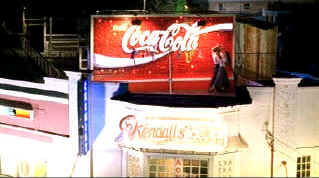

| Strictly
Ballroom (SE)/ A-,B+ |
| Miramax/1992/94/ANA
1.77 |
Baz Luhrmann's debut film Strictly
Ballroom is an ebulliently comic celebration of dance with a totally fresh perspective in the delightful Strictly Ballroom. Irreverence punctuates the rhythms of this
hilariously successful flick.
The divine comedy is a sentimental
look, in broad comic terms, at the world of ballroom dancing. It's rebel
with a cause combined with Cinderella to produce the satisfying ending
that this extremely upbeat film demands.
Strictly Ballroom is just that, totally focused on the ballroom dancing
scene of provincial Australia. It never takes itself remotely
seriously yet at the same time is kind to its characters who are more
than simply serious. While love may get in the way,
it ultimately resolves itself on the spacious boards of the
ballroom floor. Incorporating elements of a docu-drama to hilarious
effect (A tip of the hat to Rob Reiner's This is Spinal Tap.), director
and writer Baz Luhrmann composes his tale with equal elements of humor,
music and romance, deftly propelling his characters to an inevitable
upbeat finale which leaves audiences dancing out of the theater.
|
 |
| Rooftop
dancing lessons. ©Miramax |
Paul Mercurio is very appealing as Scott Hastings, heir-apparent to the
crown of ballroom king. He trips the light fantastic with lightening
feet and injects rebellious verve into his slides across the bounds of
tradition. Tara Morice turns convincingly from caterpillar to butterfly
as Scott's would-be partner in love and dance. In fact, all the
players are convincing under the comic baton of director Luhrmann. The
key to that success is that the characters seem to be taking there roles
absolutely seriously. They stay perfectly focused living in a world
light years away from home theater seats.
Rarely do I recall a more exuberant and thoroughly engaging debut film
from a director than Strictly Ballroom.
The enthusiasm and affection that Luhrmann has for his characters
injects itself into every aspect of the film. It's delightful energy is
infectious. While it is not totally original and owes a debt to a wide
range of light-hearted cinema from Fred and Ginger, to Saturday Night
Fever and even Rocky, the fact is that it banks the debt into a
compound dividend paying off in a bonanza of pleasure.
Splendid
costume design inspired by the costumes worn by competition ball room
dancers. The entire production design is consistently delightful. The
Pasa Dobles scene is quite remarkable in how it builds and even develops
a tension. The upbeat score,
whether from within or behind the action is thoroughly wonderful
accompaniment. The photography by Steve Mason captures all the pizzazz
and dazzle of the ballroom scene and the ballroom costumes by
Angus Strathe exaggerates the glitz to sparkling effect. Choreographer
John O'Connell is equally adept at keeping the high energy level of this
film from flagging. The
enthusiasm of dancing and music is echoed by the verve and brio of the
filmmaking style.
Every bit as colorfully saturated as Baz Luhrmann's latest
Moulin
Rouge,
the DVD transfer of Strictly Ballroom is a crowd pleaser.
Overall, the pleasing transfer achieves a very film-like look.
Though images might have been a touch sharper, it is likely a function
of the way the film was shot as opposed to elements or transfer quality.
Grain is tightly controlled and consistent throughout the production.
Nice lighting balance with good contrast levels. There good variation to
the fleshtones in various lighting situations. English titles in the
Spanish language sequence are rock steady and perfectly clean. The
soundtrack is open and spacious with good balance. Surround information
is minimal but creates proper ambience. The surround sound puts
you right in the center of the ballroom floor, trading steps with
Mercurio, Morice and company.
Strictly Ballroom is pure entertainment of the first order and should
not be missed by anyone looking for a joyous night of unbounded
pleasure. Double-dip, triple-dip, you'll be greedily licking the drips.
The heart of the special edition is an open and
enthusiastic commentary track from Luhrmann, wife and production
designer Catharine Martin and choreographer John O'Donnell The thirty
minute documentary which inspired Luhrmann to write the play which the
film was adapted from is also included. Strictly Ballroom is an
infectiously exuberant can't-miss package DVD special edition.
Reviewed on a Sharp 9000VX DLP Projector
|
|
|
|

Selections from the Feature
Archive include articles on
Akira Kurosawa, Frank
Darabont, Blonde
Bimbos, Hollywood
Street Gangs, or Vietnam:
The Hollywood Pariah, and many more....
Puttin on the Ritz

Fred Astaire and Cyd Charisse bring Silk Stockings to life, a remake
of Ninotchka, one of many films successfully turned into musicals by the
Hollywood dream factory. Read all about remakes into musicals by
clicking on the divine dancers
Gotta
Dance
 Fred
and Ginger tapped their way into the hearts of movie fans everywhere.
Stu Kobak takes a look at some of those dance movies that
gifted audiences toe-tapping pleasure. Click on the image to get in on
the beat. Fred
and Ginger tapped their way into the hearts of movie fans everywhere.
Stu Kobak takes a look at some of those dance movies that
gifted audiences toe-tapping pleasure. Click on the image to get in on
the beat.
 
ISF Monitor
Calibrations in the Tristate New York area. Lots of hardware info
and frequent hardware peaks from video expert Kevin Miller. They may be
judgmental, but that's the point, isn't it. Lots of DVD reviews plus
news and more.

Mystery writer Fred Hunter digs into classic
films on DVD. Check out his insightful reviews at
The Classics on DVD.
MRQE
Find reams of movie and DVD
reviews at the Movie Review Query Engine, a index of reviews appearing
on the Internet.

An on-line Home Theater magazine with
excellent hardware reviews, including thorough and responsible research.
Check it out.

Take a look at the merry
images of America's gift to the movies: Hollywood
Musical Posters are featured from The Movie Poster
Archive.
|